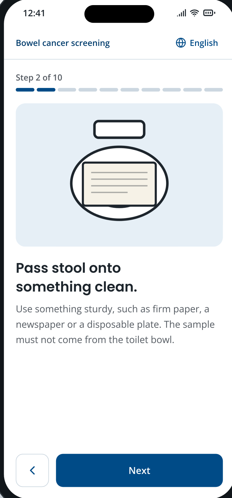
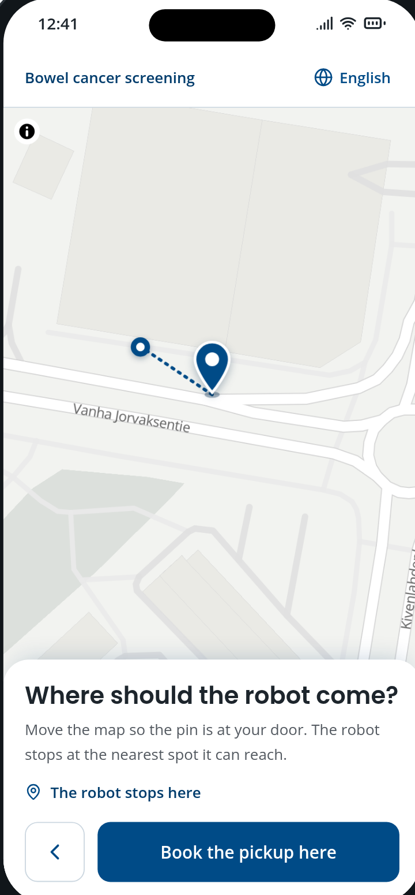
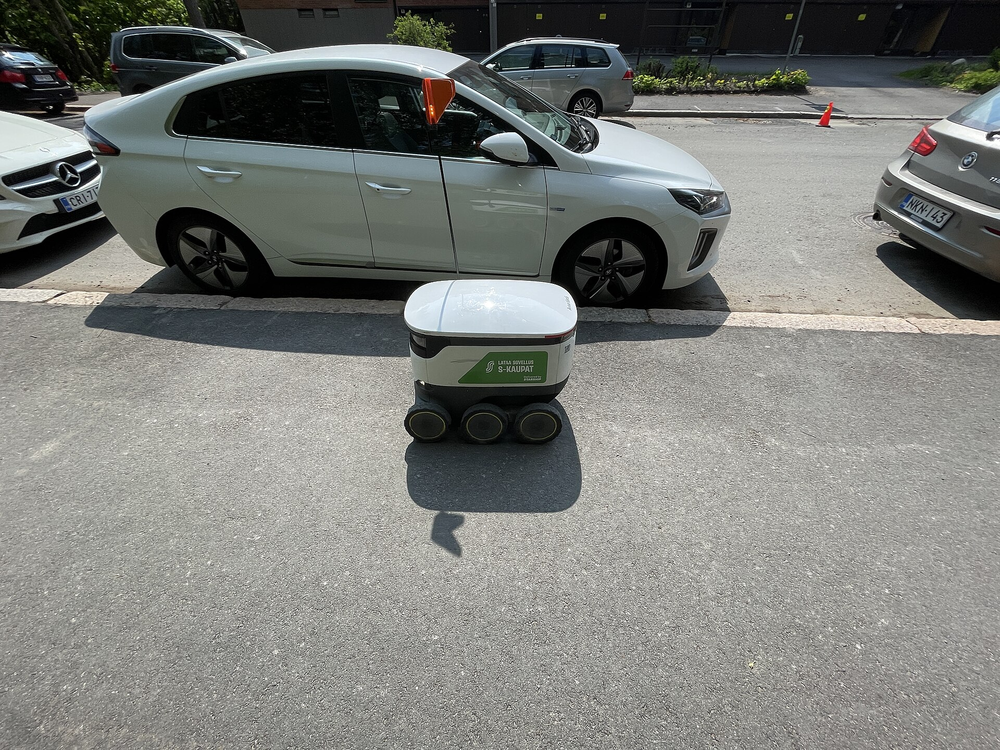
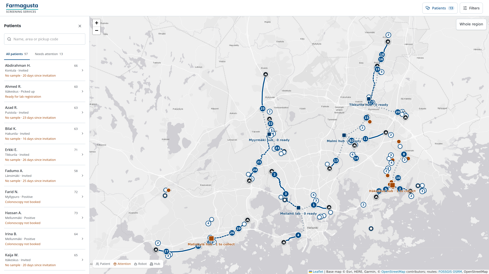

Goal 3 is survival. Survival starts with returning the test.
FOUND BY SCREENING
DIDN’T TAKE PART
Caught at stage I–II
67%
40%
Alive after 5 years
94%
62%
FIT SCREENING PROGRAMME, FLANDERS [2]
IN FINLAND [1]
1 in 5
bowel cancers among people invited in 2022 were in someone who never returned the test (259 of 1,241).
OUR JOB Move people from the orange column to the teal one, starting with those the letter misses.
[1] Finnish Cancer Registry, colorectal screening statistics: cancers by route, people eligible in 2022. [2] Tran et al. 2023, Int J Environ Res Public Health 20(2):1654. Survival comparisons include lead-time bias.
THE GAP IS WIDEST BY LANGUAGE · FINLAND 2024
Foreign-language speakers skip bowel screening almost twice as often.
NEVER RETURNED
FINNISH, SWEDISH OR SAMI MOTHER TONGUE · 74.5% RETURNED
25.5%
OTHER OR MISSING MOTHER TONGUE · 53.4% RETURNED
46.6%
Nearly 1 in 2 never enter the pathway at all.
Source: Finnish Cancer Registry, colorectal cancer screening statistics 2024, participation by mother tongue, whole country: 299,347 of 401,645 (Finnish, Swedish or Sami) and 10,524 of 19,720 (other or missing). stats.cancerregistry.fi/joukkistilastot/suolisto.html, retrieved 13.11.2026.
WHY PEOPLE SKIP → WHAT FARMAGUSTA DOES
Four reasons people skip. One fix for each.
01
The letter is hard to understand.
Kit leaflet only in Finnish, Swedish, English [1]
→
Instructions in the preferred language.
02
They don’t see why it matters.
32.9% of non-users called it unnecessary [2]
→
Explains why, and answers questions.
03
They mean to do it, then forget.
SMS reminder RCT: 53.7% → 64.2% returned [3]
→
Reminders and one clear next step.
04
Returning a stool sample is gross, and hard if you can’t get out.
59.6% of non-users list disgust as one reason [2] Disability: OR 0.72 for doing a stool test [4]
→
A robot picks it up from your door. You never leave home.
[1] HUS, instructions for collecting and returning the sample · [2] Gordon & Green 2015, BMC Public Health · [3] Vives et al. 2024, JMIR Public Health Surveill · [4] Ricciardi et al. 2024, Current Oncology
SCAN
THE INVITATION LETTER
THE PRODUCT
A QR code on the letter opens the app.
01
Scan the QR code on the invitation letter.
02
Pick your language: 9 to choose from.
03
Follow the steps, then book a robot pickup.
From letter to doorstep in four steps.
01
Pick a language
9 languages, right to left for Arabic and Persian

02
Take the sample
10 illustrated steps, following the HUS kit leaflet

03
Book a robot
Choose an hour and drop a pin at your door
04
Hand it over
Track it live, hand over the sample at your door
→
→
→

WHAT THE NEIGHBOURS SEE: GROCERIES
PRIVACY BY DESIGN
It looks like a grocery delivery. Because it’s the same robot.
01
Already an everyday sight: 1,000,000+ grocery robot deliveries in Finland. [1]
02
No courier at the door, no medical markings on the robot.
03
The lid opens only with your phone. The system sees a pickup code, not your name.
REASON 04 · EMBARRASSMENT → HANDLED
[1] Starship Technologies, 10.12.2025: S-kaupat robots completed one million orders in Finland; 650+ robots in about 80 towns. Photo: CC0, Wikimedia Commons.
THE STACK · HOW A PICKUP RUNS
We don’t build robots. Starship already runs them.
FARMAGUSTA
STARSHIP
LAB
APP
The patient books a pickup time.
→
BACKEND
AI route planning batches nearby pickups into one run.
→
STARSHIP API
Creates jobs, loads robots, streams live status.
→
ROBOT
Drives itself to the door. Only the patient’s phone opens it.
→
LAB HUB
The sample is scanned in and registered.
3,000+
Starship robots worldwide
10M+
deliveries completed
650+
robots in Finland, ~80 towns
18 h
per charge, in all weathers
Starship Technologies: delivery-apps partner API (create jobs, load robots, status updates, cancellations); our-robots page; press release 10.12.2025. The clinical integration and per-sample compartments are our proposal, to be validated with Starship.
PRIVACY INSIDE THE ROBOT
Every sample gets its own locked compartment.
Return packages lie flat in slim slots. Each opens once, locks itself, and only the lab opens it again.
STOP 1 · PATIENT A
A
A’s phone opens compartment A. Sample in, lid shut, it locks.
→
STOP 2 · PATIENT B
A
B
B’s phone opens only B. A stays locked: B can’t reach it.
→
LAB HUB
A
B
C
D
E
F
G
H
I
J
K
Only the lab’s key opens filled compartments. Every opening is logged.
OPEN FOR ITS PATIENT
LOCKED
LAB ACCESS ONLY
EMPTY
Proposed design: a custom compartment insert for Starship’s locked cargo bay, built and validated with Starship. The demo simulates the compartments.
THE BACKEND · NURSE DASHBOARD
One screen runs the fleet and tracks every patient.
AI ROUTE PLANNING
AI plans the fastest route for every robot using proven search algorithms: the same answer every time.
ADAPTS LIVE
New bookings are added to a robot’s route on the fly. One robot sweeps a whole neighbourhood in one run.
TRACKING
Logs every step: app opened, sample taken, picked up, at lab, result.
FLAGS
Flags patients who fall behind: no sample, robot waiting, positive without colonoscopy.

PATIENT STATUS
LIVE FLEET · 30 ROBOTS · 6 HUBS
Route planning: shortest-path search of the A* family (Hart, Nilsson & Raphael 1968). Flag thresholds are our assumptions. Demo data and fleet are simulated.
REAL-TIME PATIENT STATE
Every step is logged, so even silence tells us something.
WHERE THEY STOPPED
WHAT IT TELLS US
WHAT HAPPENS
●○○○
Letter sent, app never opened
The invitation didn’t land: language, attention or no smartphone.
Reminder, then a nurse call with an interpreter.
●●○○
App opened, no sample
They know what to do, but hesitate or forget.
A reminder with one clear next step.
●●●○
Sample taken, not handed over
The return is the problem, not the will.
The nurse sees the robot waiting and rebooks it.
●●●●
Positive, no colonoscopy
A delay in care: Goal 3 of the cancer strategy.
Flagged after 7 days, the nurse books it.
Stages as logged by the farmagusta prototype. Flag thresholds (14 days without a sample, 7 days without a colonoscopy) are our assumptions, not clinical deadlines.
THE SAVINGS · CAPITAL REGION
€240,000
a year in prepaid return mail, gone. In the capital region alone.
✓ Still ≈ €218,000 at today’s ~70% return rate.
✓ Real Posti contract prices, real population data.
✓ Scales to every city with delivery robots.
235,677
people aged 56–74 in Helsinki, Espoo, Vantaa and Kauniainen
÷ 2
invited every two years → 117,839 kits a year
× 80%
returned, the national target → 94,271 samples
× €2.07
Posti business-reply postage per sample → €195,141
+ €0.40
prepaid return envelope in every kit → €47,136
= €242,277
a year, shown as €240,000
Statistics Finland, population by age 31.12.2025 (table 11re) · Posti contract price list from 1.10.2026, business reply €2.07 (VAT 0) · National Cancer Strategy 2026–2035, 80% participation goal · Envelope cost €0.40 is our estimate. Gross saving, before robot running costs.
THE ASK
Let’s pilot it in one Helsinki district.
WE ASK FOR
One district for one screening round, next to the usual letter.
Starship as robot partner, through its partner API.
WE MEASURE
Test-return rate against the usual letter, by mother tongue.
Where people stop, step by step.
Cost per pickup against €2.07 postage.
READY TODAY
The app in 9 languages.
The nurse dashboard with the live fleet.
farmagusta.vercel.app
Simulated today: the robots, the lab and the bookings. The people in the demo are invented. The post stays for anyone without a smartphone.